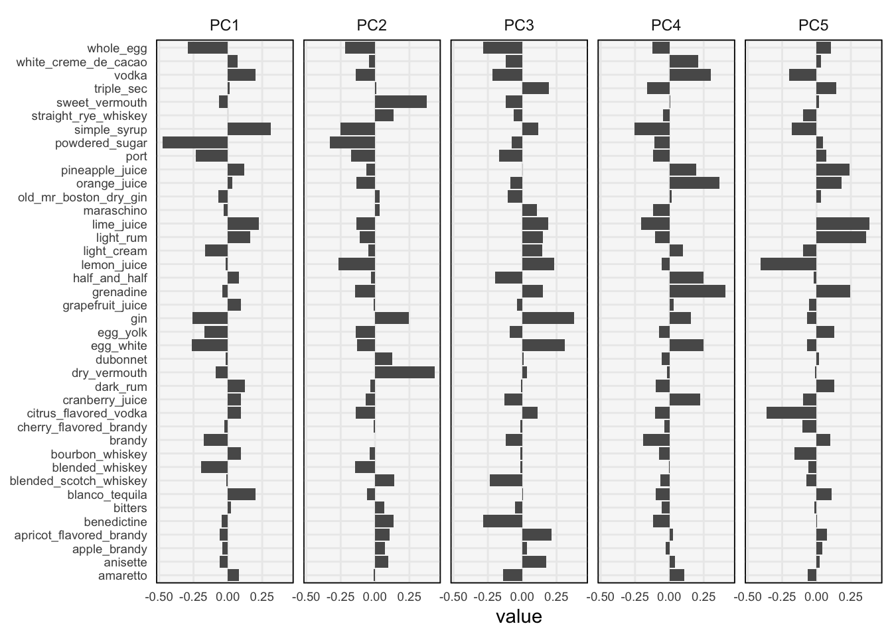
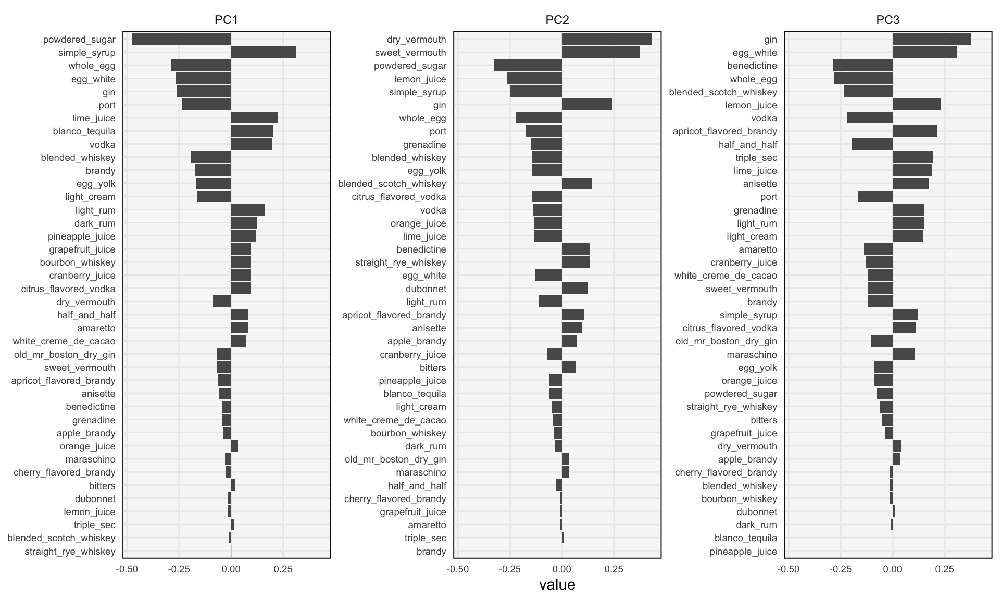
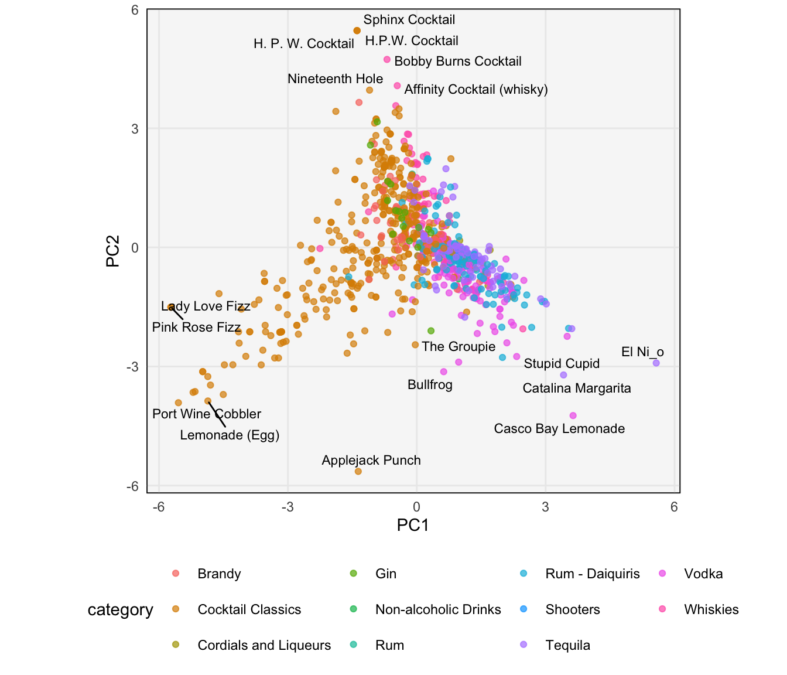
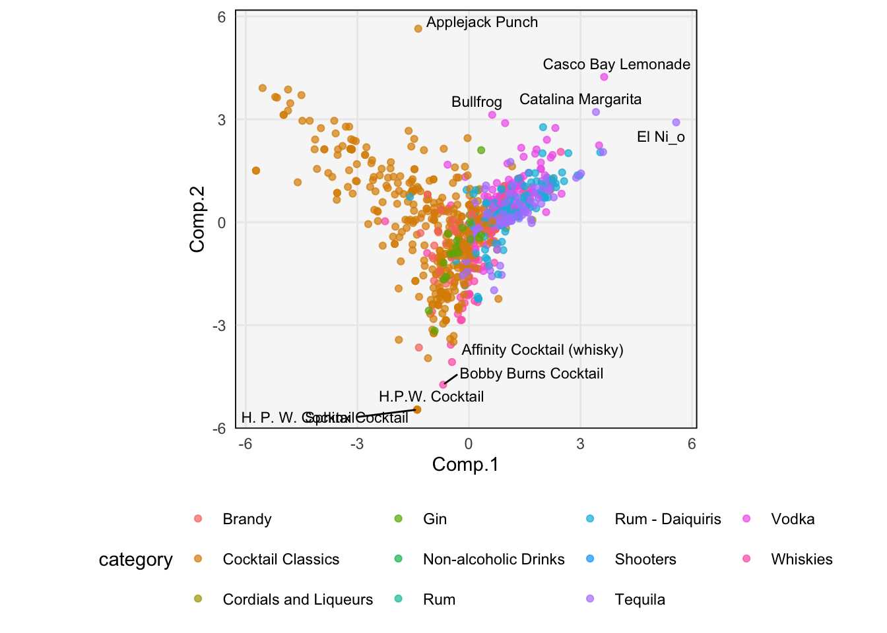

library(tidyverse)
library(ggrepel)
library(tidymodels)
library(tidytext)
theme479 <- theme_minimal() +
theme(
panel.grid.minor = element_blank(),
panel.background = element_rect(fill = "#f7f7f7"),
panel.border = element_rect(fill = NA, color = "#0c0c0c", size = 0.6),
legend.position = "bottom"
)
theme_set(theme479)Principal Components Analysis II
Visualizing and interpreting PCA.
- How should we visualize the results from PCA? There are three artifacts produced by the procedure worth considering — components, scores, and variances. The components describe derived features, the scores lay samples out on a map, and the variances summarize how much information was preserved by each dimension.
# produced by code in previous notes
components <- read_csv("https://uwmadison.box.com/shared/static/dituepd0751qqsims22v2liukuk0v4bf.csv") %>%
filter(component %in% str_c("PC", 1:5))
scores <- read_csv("https://uwmadison.box.com/shared/static/qisbw1an4lo8naifoxyu4dqv4bfsotcu.csv")
variances <- read_csv("https://uwmadison.box.com/shared/static/ye125xf8800zc5eh3rfeyzszagqkaswf.csv") %>%
filter(terms == "percent variance")- First, let’s see how much variance is explained by each dimension of the PCA. Without detouring into the mathematical explanation, the main idea is that, the more rapid the dropoff in variance explained, the better the low-dimensional approximation. For example, if the data actually lie on a 2D plane in a high-dimensional space, then the first two bars would contain all the variance (the rest would be zero).
ggplot(variances) +
geom_col(aes(component, value))
- We can interpret components by looking at the linear coefficients of the variables used to define them. From the plot below, we see that the first PC mostly captures variation related to whether the drink is made with powdered sugar or simple syrup. Drinks with high values of PC1 are usually to be made from simple syrup, those with low values of PC1 are usually made from powdered sugar. From the two largest bars in PC2, we can see that it highlights the vermouth vs. non-vermouth distinction.
ggplot(components, aes(value, terms)) +
geom_col(show.legend = FALSE) +
facet_wrap(~component, nrow = 1) +
labs(y = NULL) +
theme(axis.text = element_text(size = 7))
- It is often easier read the components when the bars are sorted according to their magnitude. The usual ggplot approach to reordering axes labels, using either
reorder()or releveling the associated factor, will reorder all the facets in the same way. If we want to reorder each facet on its own, we can use thereorder_withinfunction coupled withscale_*_reordered, both from the tidytext package.
components_ <- components %>%
filter(component %in% str_c("PC", 1:3)) %>%
mutate(terms = reorder_within(terms, abs(value), component))
ggplot(components_, aes(value, terms)) +
geom_col(show.legend = FALSE) +
facet_wrap(~ component, scales = "free_y") +
scale_y_reordered() +
labs(y = NULL) +
theme(axis.text = element_text(size = 7))
- Next, we can visualize the scores of each sample with respect to these components. The plot below shows \(\left(z_{i1}, z_{i2}\right)\). Suppose that the columns of \(\Phi\) are \(\varphi_{1}, \dots, \varphi_{K}\). Then, since \(x_{i} \approx \varphi_{1}z_{i1} + \varphi_{2} z_{i2}\), the samples have large values for variables with large component values in the coordinate directions where \(z_{i}\) is farther along.
ggplot(scores, aes(PC1, PC2, label = name)) +
geom_point(aes(color = category), alpha = 0.7, size = 1.5) +
geom_text_repel(check_overlap = TRUE, size = 3) +
coord_fixed(sqrt(variances$value[2] / variances$value[1])) # rescale axes to reflect variance
For example, El Nino has high value for PC1, which means it has a high value of variables that are positive for PC1 (like simple syrup) and low value for those variables that are negative (like powdered sugar). Similarly, since \(\varphi_{2}\) puts high positive weight on vermouth-related variables, so H. P. W. Cocktail has many vermouth-related ingredients.
In practice, it will often be important to visualize several pairs of PC dimensions against one another, not just the top 2.
Let’s examine the original code in a little more detail. We are using tidymodels, which is a package for decoupling the definition and execution of a data pipeline. This compartmentalization makes it easier to design and reuse across settings.
cocktails_df <- read_csv("https://uwmadison.box.com/shared/static/qyqof2512qsek8fpnkqqiw3p1jb77acf.csv")
pca_rec <- recipe(~., data = cocktails_df) %>%
update_role(name, category, new_role = "id") %>%
step_normalize(all_predictors()) %>%
step_pca(all_predictors())
pca_prep <- prep(pca_rec)- Here is how you would apply PCA without the tidymodels package. You have to first split the data into the “metadata” that is used to interpret the scores and the numerical variables used as input to PCA. Then at the end, you have to join the metadata back in. It’s not impossible, but the code is not as readable.
# split name and category out of the data frame
pca_result <- cocktails_df %>%
select(-name, -category) %>%
scale() %>%
princomp()
# join them back into the PCA result
metadata <- cocktails_df %>%
select(name, category)
scores_direct <- cbind(metadata, pca_result$scores)
ggplot(scores_direct, aes(Comp.1, Comp.2, label = name)) +
geom_point(aes(color = category), alpha = 0.7, size = 1.5) +
geom_text_repel(check_overlap = TRUE, size = 3) +
coord_fixed(sqrt(variances$value[2] / variances$value[1])) # rescale axes to reflect variance
The equivalent tidymodels implementation handles the difference between supplementary and modeling data less bluntly, setting the
nameandcategoryvariables toidroles, so thatall_predictors()knows to skip them.We conclude with some characteristics of PCA, which can guide the choice between alternative dimensionality reduction methods.
- Global structure: Since PCA is looking for high-variance overall, it tends to focus on global structure.
- Linear: PCA can only consider linear combinations of the original features. If we expect nonlinear features to be more meaningful, then another approach should be considered.
- Interpretable features: The PCA components exactly specify how to construct each of the derived features.
- Fast: Compared to most dimensionality reduction methods, PCA is quite fast. Further, it is easy to implement approximate versions of PCA that scale to very large datasets.
- Deterministic: Some embedding algorithms perform an optimization process, which means there might be some variation in the results due to randomness in the optimization. In contrast, PCA is deterministic, with the components being unique up to sign (i.e., you could reflect the components across an axis, but that is the most the results might change).